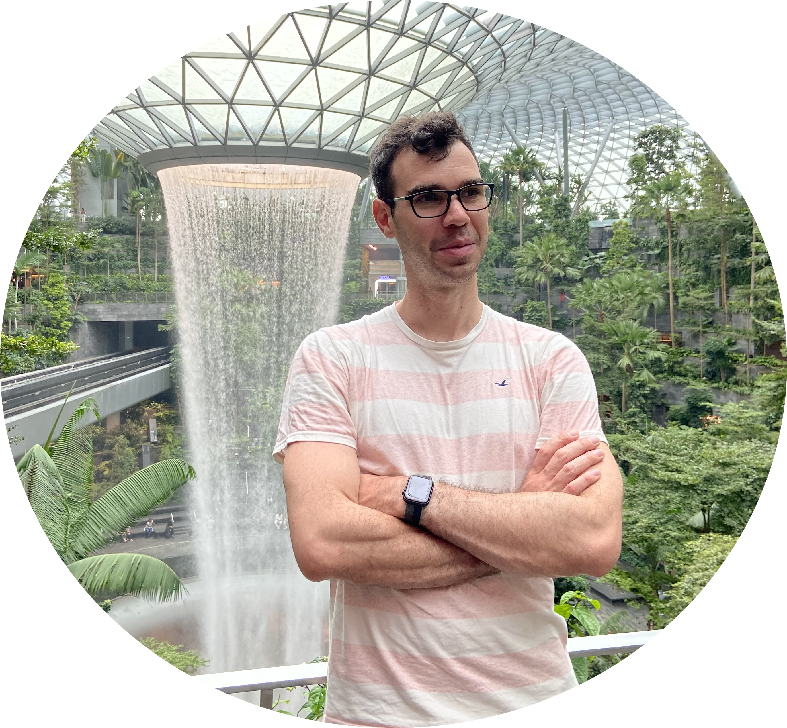
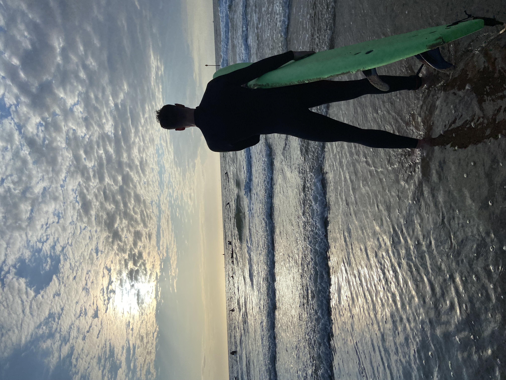

Software engineer, PhD candidate at the TU Delft cyber-analytics lab, hobby musician and sports enthusiast.
Hi, I'm Robert, software engineer and PhD candidate at the TU Delft (work submitted, defense date pending). Interested in fast software, machine learning, and computer architecture. I write about those in my blog.
Apart from coding and science I do sports like hitting the gym, table tennis, volleyball at the beach, and surfing. Creatively I play guitar, and strive to learn as much as I can about writing and producing music.
